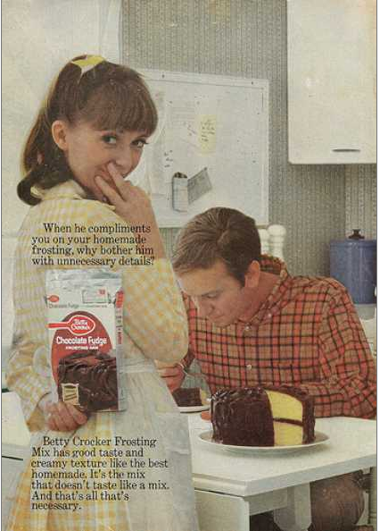
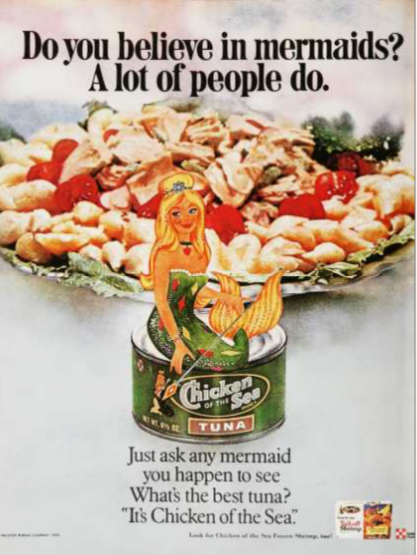

The Seventies
Advertisement 1 Analysis
This advertisement uses the societal ideology that women should behave in a way that will appeal to their male counterparts in order to sell a food product. By showing a man happily eating the product in which is being advertised given to him by a woman it is sending a message to viewers that with this product can women appease a man therefore making the product more enticing to consumers. It continues to appeal to an audience of women that are encouraged to cater to the male gaze by emphasizing the simplicity of how their product can please a man. “When he compliments you on your homemade frosting, why bother him with unnecessary details?” The brand Betty Crocker is not only telling consumers that with their product they do not have to go through the hassle of cooking, but they can use their product to lie to the man being appeased making the woman seem more desirable to the male gaze because she is not only able to cook, but she can cook successfully. Overall, this ad uses the dominant ideology of that time that women should appeal to the male gaze by serving men and this product is going to make that task easier to complete.
Advertisement 2 Analysis
This advertisement uses dominant societal beauty standards of a woman in order to appeal to both male and female consumers and sell a food product. The advertisement depicts an image of a blonde, assumingly white, thin caricature of a mermaid in order to associate her beauty and enticement with the food product itself. She conforms to a beauty standard that dominates the western world which not only sells the product to attract the male gaze and male consumers, but it sells the product to females that may wish to look like her in order to attract the male gaze themselves. Her beauty and sex appeal is directly connected to the product enticing men that want her to buy the product she presents and females that want to be her to buy the product as well. “Just ask any mermaid you happen to see, what’s the best tuna?” This ad tells consumers to trust in the beautiful mermaid that their product is “the best”, which again uses the male gaze to gain consumer appeal and therefore trust.
Citation: Vintage ad browser. (n.d.). Retrieved November 29, 2021, from https://www.vintageadbrowser.com/.